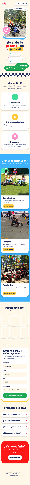

Versión 9 (25 oct): lo marcado «En revisión» todavía no es final. Se suma el carril de crecimiento, en rosa: una pieza diaria sin venta (memes, carruseles guardables y reels tiernos) para mamás y papás, con prioridad a la vida en casa y lo de colegio solo en la semana de clausuras. Hasta el 13 dic sale una pieza diaria y del 14 al 31 dic, 3 por semana. Versión 7: se sumó el material del fin de ciclo de un colegio (2 reels, carrusel, post y 3 historias) y se adelantó en octubre. Versión 6: fotos re-iluminadas (más luz, realistas), ilustraciones de fechas especiales más limpias, P01–P08 y R01–R10 ya programados en Meta. Todo el contenido de octubre a diciembre está producido, y la web ya está en línea. Look infantil: color tratado, tomas estabilizadas, música y fotos de todos los eventos (cumple Spiderman, parque de febrero, MAO). Calendario de redes, piezas producidas y pauta de Funny Ride Go Karts. Cada tarjeta trae su vista previa, el texto del post con botón para copiar y un espacio para que anotes cambios. Todos los archivos finales están en tu carpeta Documents.
Listo o Programado final En revisión hecho, falta aprobación; puede cambiar En proceso se está produciendo Por hacer
El plan
Peques al volante
Objetivo
Llenar las fechas de vacaciones, colegios y convivios de fin de año con conversaciones de WhatsApp (4239-8238) que terminen en eventos apartados con anticipo.
Concepto
"Peques al volante": un negocio para chiquitines. Fotos y videos reales de nuestros eventos, más brillantes y coloridos, con textos tipo sticker, confeti, bandera a cuadros ondulada y un ritmo alegre con efectos de sonido (pop, boing, bocina). Siempre se repite: karts de pedal para peques de 3 a 8 años.
Mezcla de contenido
La carrera40 %
Cómo funciona25 %
Prueba social20 %
Comunidad15 %
Horarios sugeridos
Reels: 7:00 p. m. entre semana, 10:00 a. m. sábado y domingo.
Posts y carruseles: 12:30 p. m.
Historias: repartidas de 9:00 a. m. a 8:00 p. m.
Cada reel sale en Instagram y Facebook, y en TikTok con el mp4 original.
Reglas del sistema
Titulares en Lilita One con borde azul marino tipo sticker; textos en Baloo 2.
Paleta: rojo cereza, amarillo sol, azul cielo, verde menta, rosa chicle y fondo crema.
Videos con corrección de color y estabilización; cortes al ritmo de la música.
El texto nunca va encima de niños ni karts.
Una foto usada en historia no se repite en post.
Cierre fijo: fondo crema con confeti, logo, sello "3 a 8 años" y botón de WhatsApp.
Peter y Patrick solo en fechas especiales.
Carril de crecimiento Nuevo
Objetivo: envíos, guardados y seguidores entre mamás y papás de Guatemala. No vende nada; el logo va chico.
Prioridad a la casa: 44 piezas de casa o fechas chapinas y solo 5 de colegio. Desde el 9 nov todo gira a vacaciones, Navidad y familia.
Papás protagonistas en 10 piezas.
Formato: ilustración 3D completa con el texto encima, grande y con contorno. Los karts siempre son iguales a los reales.
Prueba del 26 oct al 22 nov. Ese día se quita lo que menos funcionó y se repite lo que más se compartió (espacios «Ganador»).
Memes a las 8:30 p. m. y carruseles a las 12:30 p. m., sin chocar con los reels comerciales de las 7:00 p. m.
Qué medimos
Conversaciones de WhatsApp por semana y cuántas se vuelven evento.
Costo por conversación en pauta (septiembre: Q13.30).
Envíos y guardados por reel.
Retención a 3 s de cada reel, para escoger cuál pautar.
Calendario
ReelPost o carruselHistoriasCrecimiento (sin venta)Toca un código para ir a su tarjeta.
Pauta en Meta
Objetivo: WhatsApp
Q13.30Costo por conversación en septiembre (12 por Q159.58). Agosto cerró en Q8.32.
Q4.96–7.63Rango de las campañas que mejor han funcionado: reel promocionado desde Instagram.
0Pixels de Meta en la cuenta. La web no mide conversiones hasta crear uno.
Fechas
Qué se pauta
Mensaje
17–30 oct
R01 promocionado desde Instagram · Q10/día · WhatsApp + DM · público Papás GT 25-45 FR (activo, en revisión)
Cumple en vacaciones y colegios
1–15 nov
El reel con mejor retención entre R01, R02 y R03
Cumple en vacaciones · Family day
16–30 nov
Anuncio ganador + R11 resumen del año
Aparta diciembre
1–15 dic
R13 Diciembre se llena + R14 Posadas
Posadas de colegio, empresa y familia
26–31 dic
R17 Arranca enero
Cumples de enero y regreso a clases
Un anuncio por conjunto, sin precio en el copy, sin Messenger. El presupuesto lo defines tú; concentrarlo en menos días rinde más que repartirlo.
Web de conversión
En línea
Dónde está
josemarroquin.me/funny-ride. Publicada con GitHub Pages desde el repositorio funny-ride de tu cuenta; tu dominio josemarroquin.me ya estaba conectado, así que quedó ahí. Gratis y sin vencimiento.
Qué trae
Video arriba con tomas de los tres eventos, galería en movimiento, pasos, celebraciones, clips, preguntas de papás y armador de mensaje de WhatsApp. Úsala como enlace en la bio de Instagram y en los anuncios.

Para revisar
De tu lado
Escuchar los reels con audífonos y decirme si algún efecto de sonido sobra.
Confirmar el permiso del MAO para usar videos con niños en pauta.
Crear el Pixel de Meta y pasarme el ID para medir la web.
Validar las respuestas de la web sobre lluvia, espacio y zonas.
Definir presupuesto de pauta y la oferta de Viernes Negro.
Si quieres un testimonio de papás, grábalo en el próximo evento y lo sumo como reel extra.
Por decidir (25 oct)
Halloween: P03, R05, H06 y H07 ya están programados; la estrategia de crecimiento proponía evitarlo porque muchas familias evangélicas lo rechazan. ¿Se quedan o se cambian?
P08 «Tu colegio también corre» (11 nov): los colegios ya están de vacaciones; propuesta, pasarlo a enero y publicar P14 en su lugar.
H11 (19 nov): cambiar la opción «Actividad del cole» por «Una posada».
P15 y la pauta del 1 al 15 dic: decir «familias, guarderías y empresas» en lugar de «colegios».
Notas
Música: pistas del stock de Magnific (incluido en tu cuenta, sin gastar créditos) y de Pixabay (libre para uso comercial). No bajé música de YouTube: descargar de ahí va contra sus condiciones y muchas pistas "sin copyright" igual piden licencia o atribución. Si quieres una de la Biblioteca de audio de YouTube Studio, la bajas tú y la cambio.
Las pistas de Pixabay marcadas con Content ID pueden recibir reclamo en YouTube, no en Instagram ni Facebook.
Las versiones anteriores (estilo transmisión, R1 con voz) quedaron en _versiones_anteriores.
Las piezas que no tenían material se armaron con las tomas que ya existían; nada queda por grabar.
Copy de noviembre y diciembre con apoyo de tu ChatGPT; ajusté dos historias de diciembre para no repetir preguntas.
Tus cambios
Lo que escribas en cada tarjeta se guarda en este navegador. Cuando termines, copia todo y pégamelo en el chat.